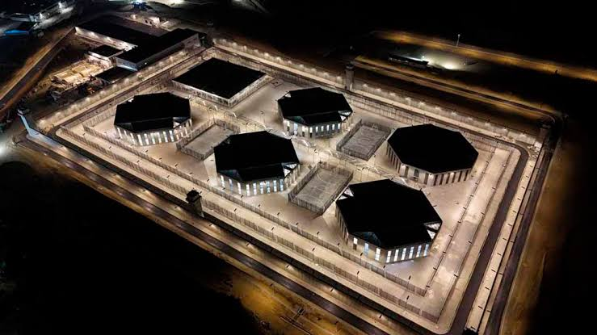

Incrementando el poder coercitivo del Estado, primero en zonas de mayor conflictividad y fronterizas, y progresivamente hacia el interior del país.
Comando Conjunto de las Fuerzas Armadas
Objetivo
Objetivo 1:
Imponer el control efectivo del territorio nacional y sus recursos.

18 estrategias, organizadas por plazo de ejecución
Incrementando el poder coercitivo del Estado, primero en zonas de mayor conflictividad y fronterizas, y progresivamente hacia el interior del país.
Comando Conjunto de las Fuerzas Armadas
Incrementando la vigilancia y control de rutas aéreas, marítimas y terrestres vinculadas a economías ilícitas, con cooperación internacional.
Policía Nacional
Neutralizando las cadenas de mando de los Grupos Armados Organizados (GAO).
Comando Conjunto de las Fuerzas Armadas
Fortaleciendo la ciberseguridad nacional.
Ministerio de Telecomunicaciones y de la Sociedad de la Información
Usando tecnología de vanguardia para vigilar la infraestructura de los sectores estratégicos y las Zonas de Seguridad de Frontera (ZSF).
Comando Conjunto de las Fuerzas Armadas
Neutralizando la minería ilegal con operaciones militares y acciones coordinadas: incautación de insumos, clausura de depósitos y procesamiento de responsables.
Comando Conjunto de las Fuerzas Armadas
Interdictando rutas y desmantelando puntos ilegales de suministro de combustibles.
Policía Nacional
Fortaleciendo las operaciones de defensa frente a la intrusión extranjera.
Comando Conjunto de las Fuerzas Armadas
Fortaleciendo las operaciones de seguridad frente a la intrusión extranjera.
Policía Nacional
Incrementando la cooperación internacional en seguridad y defensa.
Ministerio de Relaciones Exteriores y Movilidad Humana
Complementando el marco normativo de la gestión minera nacional.
Ministerio de Ambiente y Energía
Actualizando el catastro minero nacional.
Ministerio de Ambiente y Energía
Incorporando tecnología de punta en las operaciones CAMEX para una reacción e intervención inmediata.
Comando Conjunto de las Fuerzas Armadas
Modernizando la interconexión interinstitucional del Sistema Nacional de Control de Armas.
Comando Conjunto de las Fuerzas Armadas
Impulsando la cooperación regional de inteligencia sobre el flujo (legal e ilegal) de armas, explosivos, municiones y agentes nucleares, biológicos, químicos y radiológicos.
Ministerio de Relaciones Exteriores y Movilidad Humana
Fortaleciendo las capacidades de las FF.AA. para la defensa y soberanía del Estado.
Comando Conjunto de las Fuerzas Armadas
Fortaleciendo las capacidades de la Policía Nacional para la seguridad del Estado.
Policía Nacional
Implementando programas de formalización, regulación y tecnificación de la minería artesanal en sectores afectados.
Ministerio de Ambiente y Energía